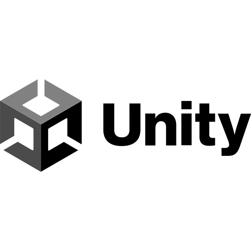
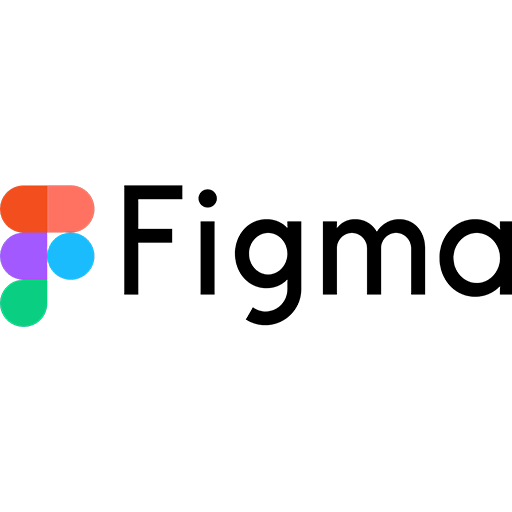
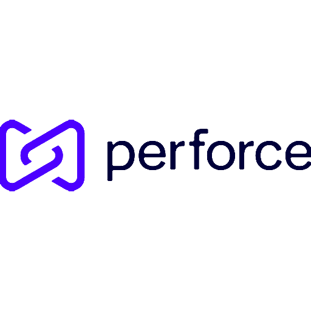

Environnement technique





Chez Leikir Studio, j’ai principalement eu l’opportunité de travailler sur Synergy pendant 2 ans et demi. Ce jeu de gestion city-builder et de survie, à consonnance assez écologique, se veut être un savant mélange entre le jeu Frostpunk et Arzach, la BD de Jean-Giraud dit "Moebius".
Réalisé sur Unity URP avec notre équipe d'une dizaine de personne dont 3 développeurs, j’ai pu y contribuer et enrichir l’expérience du joueur en intervenant sur de nombreux sujets variés tel que le gameplay, l'UI, le gamefeel, l'immersion, le tout en collaborant étroitement avec nos Game Designers, Artistes et notre Narrative Designer.
Durant ces presques 3 ans passé sur la production, la période d'Early Access et le maintient du jeu live, j'ai implémenté de nombreux éléments, dont certaines portions importants du jeu. Mes 3 plus grosses contributions au jeu auront été le système de recherche du jeu, le système d'objectifs et le tutoriel.
Ces 3 sujets m'ont demandé d'avoir une compréhension fine des besoins des Game Designers, afin de leur mettre à disposition des outils robustes, flexibles et simple d'utilisation, afin de leur permettre de réaliser les nombreuses saisies requises.
Pour ce qui est de l'arbre de recherche, j'ai tout d'abord du réaliser un outil de saisie et de vérification de celle-ci, afin de s'assurer que chacun des noeuds de l'arbre de recherche ainsi que leurs liens respectifs soient tous correctement saisis. Il a fallu pour cela rendre l'outil le plus digeste possible, afin que les Game Designers puissent modifier avec aisance cette architecture complexe, en fonction de leurs besoins d'équilibrage.
Un autre challenge aura été de gérer correctement les différentes couches d'animations et les combinaisons d'états de chaque noeud dans l'arbre de recherche. Un noeud pouvant avoir plus d'une centaine d'états visuels différents (masqué, visible, débloquable, débloqué, etc le tout à combiner avec des états de survol, clic et sélection...) et 3 types différents (noeud normal, sous-noeud et noeud parent), les combinaisons d'états visuels étaient bien trop nombreuses. Pour résoudre cette complexitée et éviter d'avoir à tous les saisir un par un, il a été choisi de réaliser de multiples Finite State Machines ou Machines à Etats Finis afin de gérer ces combinaisons d'états de la manière la plus légère et digeste possible. Cela nous aura permit de réduire très fortement le coût de saisie et permettait lors des ajustements avec les graphistes, de venir ajuster facilement un élément pour que cela se répercute sur tous les états concernés, et ça en quelques clics.
Enfin, le système de recherche devait être flexible et robuste afin de pouvoir s'adapter tout au long de la production aux besoins changeants des Game Designers en matière de progression joueur, que ce soit à échelle micro ou macro. Pour cela, de nombreux types de débloquages ont été mis en place, par exemple un nouveau bâtiment, une amélioration de celui-ci, une nouvelle action disponible, une bonus de rendement etc. C'est cette variété de possibilités qui a permis aux Game Designers d'ajuster finement la progression macro du jeu et s'assurer qu'elle soit le plus fluide possible pour le joueur tout en gardant constamment des éléments intéressants à aller chercher.
Pour les objectifs, 2 contraintes majeures ont été présentes. La première étant de pouvoir valider un objectif indépendamment de son état visuel à l'écran. La raison étant qu'il ne fallait pas que le joueur puisse sauvegarder juste après que son objectif soit validé mais pas encore affiché en tant que tel, puis qu'au rechargement de sa sauvegarde il se retrouver avec son objectif invalide. Pour palier cette problématique, il a été primordial de décoreller fortement l'état visuel du panneau de quête de l'état de progression réel des objectifs en jeu. Pour se faire, un système de queue d'animation a été réalisé, permettant de valider plusieurs objectifs en même temps, tout en ayant les animations de validations qui se déclenchent dans le bon ordre à l'écran pour le joueur. Ce choix architectural a permis de s'assurer que l'état de progression des objectifs soit toujours correct, peu importe l'état de jeu.
Le second challenge a été de pouvoir permettre une compatibilité des objectifs avec de nombreux besoins designs, le tout en n'impactant pas les performances du jeu. En effet, au total plus de 30 types différents d'objectifs ont été réalisés, allant du simple comme par exemple "Construire 1 maison" aux plus complexes tel que "Avoir X logements avec un niveau de satisfaction Y supérieure à Z". Notre solution aura été de brancher les objectifs sur des évènements globaux du jeu, permettant ainsi de ne pas avoir à vérifier en permanence l'état de chaque objectif, mais seulement lorsqu'un évènement pertinent se déclenche. Ainsi, lorsque celui-ci se produit, seul les objectifs concernés sont notifiés et peuvent mettre à jour leur état de progression, demander une mise à jour de l'UI, voire se valider si toute ses conditions sont remplies. Ce choix d'architecture a d'ailleurs été favorisé pour de nombreux éléments du jeu, notamment pour beaucoup d'éléments l'UI, permettant de mettre à jour l'interface le moins fréquemment possible. Ce choix a fortement réduit le coût de rendu de l'interface qui est, malheureusement, assez consommateur en performance sur Unity.
Le tutoriel de Synergy a été pensé pour être le plus immersif et intégré possible dans l'expérience de jeu, afin de ne pas briser l'immersion du joueur tout en essayant de passer le bon volume d'information au joueur. Pour cela, j'ai réalisé en collaboration avec notre Lead Game Designer et notre Narrative Designer différents types d'accompagnements dans le jeu, afin de varier les quantités d'informations transmises au joueur et le rythme de celles-ci. On retrouve donc un mélange de popups qui apparaissent lorsque le joueur rencontre un nouvel élément de gameplay complexe, des accompagnements plus légers, venant mettre en valeur un élément de la carte ou de l'interface, des objectifs tutoriels qui guident le joueur pas à pas dans les mécaniques de jeu, ainsi que des étapes narratives qui aident à ancrer le tutoriel dans un scénario crédible.
Ces différents types d'accompagnements ont permis de rythmer le tutoriel et de garder l'attention du joueur tout au long de celui-ci, mais ont été un réel challenge pour nous. En effet, il a fallu s'assurer que chacun de ces éléments soient bien coordonnés entre eux, afin d'éviter que le joueur ne soit submergé par trop d'informations en même temps ou au contraire qu'il ne se retrouve bloqué car un élément du tutoriel n'est pas encore déclenché. Ces contraintes ont demandé de nombreuses itérations et ajustements, mais ont permis au final de créer un tutoriel fluide et engageant pour le joueur.
Coté technique, le système de tutoriel a été conçu pour être modulaire et extensible, permettant ainsi d'ajouter facilement de nouveaux éléments, notamment dans l'UI du jeu, sans avoir à impacter le layout global. Chaque élément de tutoriel peut être appelé indépendamment, et peuvent même être appelés dans un scénario hors tutoriel. C'est d'ailleurs ce que nous avons fait en mettant en place des pôpups d'introduction de systèmes de jeu, qui apparaissent lorsque le joueur découvre un nouveau système durant une partie pour la première fois.